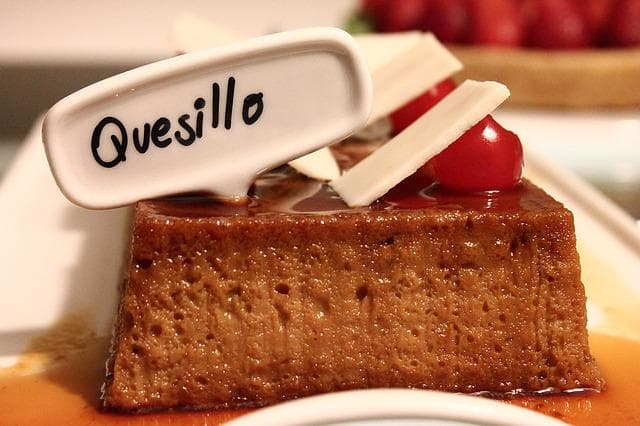
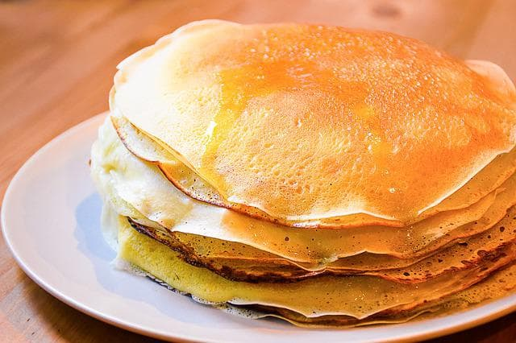

A Hallaca nada mais é do que uma folha de bananeira, onde é possível colocar a massa de farinha de milho hidratada com caldo de frango.

Quesillo
O Quesillo Venezuelano é uma típica sobremesa da Venezuela, sendo ele bem semelhante ao nosso pudim de leite condensado. A grande diferença está em relação ao flan. Enquanto o flan usa apenas a gema dos ovos, o quesillo usa o ovo inteiro.

Cachapas
Remete bastante às panquecas americanas. No entanto, elas são feitas de milho verde, água e açúcar. Em relação ao recheio, pode ser de queijo branco, que é uma combinação bem deliciosa.